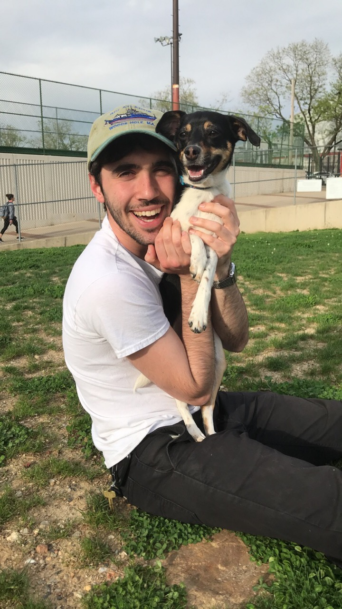
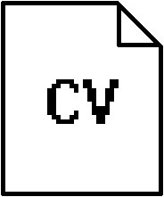

Adams personal and professional interests are Design and Biology. His greatest interest lies in biomimicry, a crossroad where the two intersect. When executed sustainably and ethically, he believes biomimicry is an amazing return to nature while embracing the technological advances of the 21st century.
While attending Temple University for a B.S. in Biology, Adam took sculpture classes that introduced him to the world of design, and he's been making things ever since.
Currently Adam is a Lab Technician for the Bernal lab at Auburn University, where he assists the team with their research (and conducts some of his own).